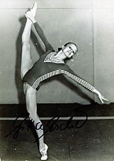

Gitta Escher (GDR)
1976 Olympic Team Bronze Medalist

Medal Total
Olympic Games: 1 Bronze
Gitta was born on March 18, 1957, in Nordhausen and trained at SC Chemie Halle with coach Gotz-Michael Glitscher. After retiring from competitive gymnastics, she became a coach and choreographer at her club. She has two children.
Competition Results
1970 1975 1976 This page was created on September
12, 2004 and was last updated on November 5, 2024.
Children's Spartakiade: 1st AA, 1st B, 1st FX
1971
GDR Championships: 4th VT
GDR-SWE Dual Meet: 1st Team, 6th AA
Intl. Championships of Romania: 4th AA
1973
DTV Cup: 5th AA
GDR-NOR Dual Meet: 1st Team, 3rd AA
Jr. URS-GDR-HUN Meet: 2nd Team, 4th AA
1974
Chunichi Cup: 3rd AA
GDR Championships: 3rd FX
Champions All: 4th AA
Chunichi Cup: 1st AA
DTV Cup: 6th AA
GDR Championships: 2nd AA, 1st V, 1st FX, 4th B
Moncada Cup: 1st AA, 1st V, 3rd UB
GDR Championships: 1st AA, 1st B, 1st FX, 2nd V
GDR-CUB Dual Meet: 1st Team, 3rd AA
NOR-GDR Dual Meet: 1st Team, 1st AA
Olympic Games: 3rd Team, 6th AA, 5th V, 6th B, 6th FX
© Gymn Forum